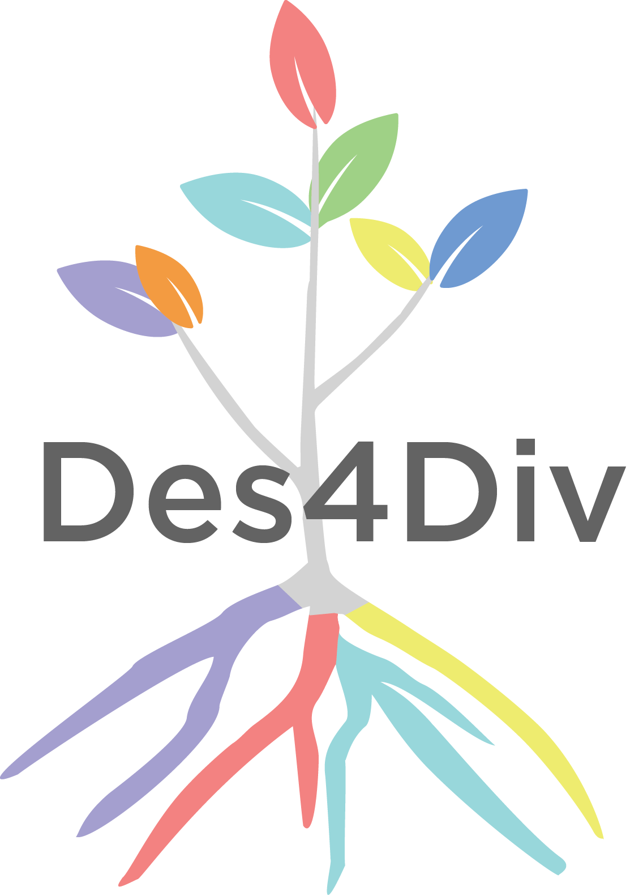

Writing & Publications
"rm monika.chr: Ghostly Code in Doki Doki Literature Club!"
A webtext examining feminist coding rhetorics and materiality in a dating simulator/horror visual novel game.
"Black Digital Humanities for the Rising Generation" Special issue Introduction
Introduction to the Digital Humanities Quarterly special issue on Black studies in/for the rising DH generation; the co-editors are Alanna Prince, Cara Marta Messina, and Dr. Izetta Autumn Mobley.
"Tracing Fan Uptakes: Tagging, Language, and Ideological Practices in The Legend of Korra Fanfictions"
A research note published in The Journal of Writing Analytics, volume 3.
"Black Lives Matter Digital Activism Writing for Social Media Course"
An extended essay published in Spark: A 4C4 Equality Journal, volume 3.
"Op-ed: Who is responsible for a COVID-19 outbreak at Northeastern?"
An op-ed that asks Northeastern University to take accountability in protecting not just students, but the surrounding communities. Image by Madison Boudreau Popovic.
"'These Violent Delights': A Review of Timothy J. Welsh’s Mixed Realism: Videogames and the Violence of Fiction"
A book review published in Digital Humanities Quartlerly, volume 13, issue 3.
"Where We Are: Dialogue and Disciplinary Space"

Cara Marta Messina contributed to this dialogue in Composition Studies volume 27, issue 2, along with members of the WPA-L Working Group and the NextGEN listserv startup team.
"Mixed Methods Research in Writing Centers" Studies

Cara Marta Messina and Neal Lerner co-wrote this chapter for the book Theories and Methods of Writing Center: A Practical Guide, a collection edited by by Jo Mackiewicz and Rebecca Babcock
How to Use the Women Writers Vector Toolkit
A video guide how to use the WWVT, which Cara Marta Messina co-wrote and narrated.
Women Writers Vector Toolkit Teaching Assignments
Several teaching assignments written for instructors interested in using the Women Writers Vector Toolkit, written by Cara Marta Messina in 2018.
Design for Diversity Opening Forum: A Reflection
Cara Marta Messina's reflection of the Design for Diversity Opening Forum in 2017.
NURig End of the Year Report

Presented by Cara Marta Messina and Matthew Hitchcock at Northeastern University's Writing Program End of Term Meeting, 2017.
"Embracing the Challenges of Conventional Practices, Program Inquiry, and New Media in Writing Center Theory and Research"
Harry Denny, Cara Messina, and Michael Reich. Published in Composition Studies, 43.2, Fall 2015